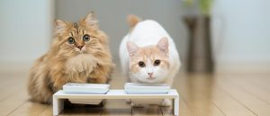
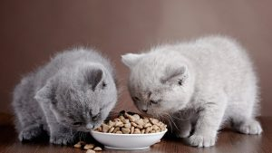
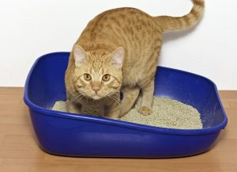
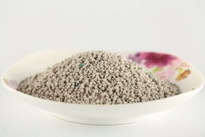
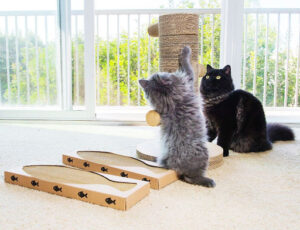
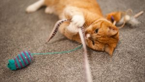
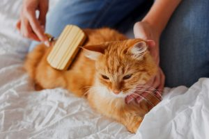

گربهها بسیار ملوس و دوستداشتنی و البته باهوش هستند، رابطهای خاص با صاحبشان برقرار میکنند و نگهداری از آنها تجربهای بسیار شیرین و لذتبخش است. نگهداری از گربه هم مثل نگهداری از هر موجود زنده دیگه به یک سری لوازم و وسایل نیاز داره که از قبل باید این لوازم گربه رو تهیه کنید. اگه تا به حال تجربه نگهداری از گربه نداشتید و هیچ اطلاعی در مورد لوازم مورد نیاز گربه ندارید اصلا نگران نباشید. ما در این مطلب راهنمای کامل خرید وسایل گربه رو به شما ارائه میکنیم و در مورد لوازم گربه صحبت میکنیم. حتی اگه در حال حاضر گربه دارید هم بد نیست به این لیست نگاهی بندازید و ببینید چیزی رو از قلم ننداخته باشید. با ما در پت پرس همراه باشید.
۱. باکس گربه، وسیلهای ضروری برای حمل و نقل و نگهداری
خب یکی از مهمترین وسایل گربه یک باکس با کیف برای حمل و نقله. در غیراین صورت چطور میخواهید گربه عزیزتان را برای اولین بار به خانه بیاورید؟ گربهها در محیط ناآشنا بسیار ترسو و غیرقابل پیشبینی هستن و به هیچ وجه نباید بدون باکس اونا رو جابجا کرد.
باکس گربه در اندازه های مختلفی وجود داره که با توجه به وزن و جثه گربهتون میتونید انتخاب کنید. البته پیشنهاد ما اینه که یه باکس سایز متوسط بگیرید که هم زمان بچگی و هم زمان بزرگسالی بتونید ازش استفاده کنید. اگه نمیدونین که چطور یک باکس خوب یرای گربهتون انتخاب کنین؛ بهتره مقاله راهنمای خرید باکس گربه رو مطالعه کنین.
علاوه بر باکس، کیف و ساک های حمل و نقل هم وجود داره که برای بچه گربهها و گربههای کوچیک خیلی خوب و مناسبه، حتی مدلهای فانتزیتر مثل کوله پشتی و … هم وجود داره و انتخاب هریک از اینا تا حد زیادی به سلیقه شما هم بستگی داره؛ اما به نظر ما باکس محکمتر، امنتر و بادوامتره و به همین دلیل خریدش به صرفهتره.
در لینک زیر میتونید انواع مدلهای پرطرفدار در پت شاپ معتبر سیناوت رو ببینید و با هم مقایسه کنید:

۲. ظرف آب و غذای گربه و ویژگیهای آن
خب حالا که باکس رو تهیه کردید نوبت به خرید یکی دیگه از لوازم جانبی گربه یعنی ظروفی مناسب برای آب و غذای گربهتون میرسه. گربهها دوست دارن وسایل شخصی خودشون رو داشته باشن و از لحاظ بهداشتی هم بهتره برای گربهتون از ظروف جداگانه از ظروف غذای خودتون استفاده کنید. ظرف آب و غذای گربه به سادگی میتونه دو تا کاسه از جنسهای پلاستیک، سفال، فلز و … باشه که قیمت خیلی بالایی هم ندارن.
با این حال، چون گربهها خیلی شیطونن پیشنهاد میکنیم ظروف پلاستیکی یا استیل بخرید تا یه موقع نشکنه و خراب نشه.
در سایت دیجی کالا میتونید انواع ظرف غذای گربه رو ببینید: بعضی ازونا یک سینی هم زیرشون دارن که به تمیز موندن خونهتون خیلی کمک میکنه. بعضی مدلها دو ظرف بهم چسبیده هستن و بعضی دیگه هم شکلها و طرحهای زیبایی دارن که به زیبایی محیط خونهتون هم کمک میکنه.
ظرف آب و غذای گربه رو باید هر روز تمیز کنید و همیشه آب تازه در اختیارش قرار بدید، چون گربهها خیلی به بو، تمیزی و نظافت حساسن!

۳. غذا و انتخاب بهترین رژیم غذایی برای گربه
خب به مبحث اصلی یعنی غذا میرسیم. انتخاب غذای و رژیم غذایی مناسب اصلیترین و مهمترین عامل در سلامت و طول عمر گربه دلبندتونه و یکی از مهمترین وسایل گربه محسوب میشه. به همین دلیل باید با توجه به سن گربه، میزان فعالین و نژادش مناسبترین غذا رو بهش بدید. در این مورد پیشنهاد میکنیم حتما با دامپزشک مشورت کنید، مثلا گربه پرشین به رژیم غذایی خاصی نیاز داره و باید حتما به این موضوع توجه کنید. غذای تجاری گربه به طور کلی به دو دسته تقسیم میشه: غذای خشک و غذای تر یا کنسروی.
به طور خلاصه، غذای خشک ماندگاری بالاتری داره و ارزانتره؛ در حالیکه غذای کنسروی بسیار لذیذ و خوش خوراکتره اما قیمت بالاتری هم داره.
انتخاب غذای خشک یا تر یا حتی اضافه کردن غذای خانگی موضوع مهمیه و به وضعیت گربهتون بستگی داره. در همین رابطه مطالب زیادی در صفحه غذای گربه نوشتیم که اطلاعات بسیار خوبی در مورد خرید بهترین غذا بهتون میدن.
بنا به توصیه دامپزشکان بهترین رژیم غذایی برای گربه ترکیبی از غذای خشک و غذای تر یا کنسرویه.
۴. جای خواب گربه، قلمرویی اختصاصی برای استراحت دوست ملوستون!
گربهها عاشق خوابیدن هستن و بخش زیادی از شبانهروز در حال چرت زدنن. پس خرید یه جای خواب نرم و گرم و راحت جزء خریدهای واجب و ضروری در لیست وسایل گربه است. البته اینم بگیم که حتی بعد از اینکه جای خواب خریدید انتظار نداشته باشید که گربه فقط اونجا بخوابه؛ گربهها هرجا دلشون بخواد میخوابن و معمولا بهترین مبل خونه رو مال خودشون میکنن! ولی به هرحال لازمه که یه جای خواب مخصوص براشون وجود داشته باشه.
جای خواب گربه مدلهای خیلی متنوعی داره و انتخابش تا حدی به سلیقه خودتون و دکوراسیون خونهتون هم بستگی داره. از یه تشک ساده گرفته تا خونه گربه و تختخوابهای اشرافی! در لینک زیر میتونید انواع این مدلها رو ببینید و هرکدوم رو دوست دارید انتخاب کنید.

۵. توالت مخصوص گربه و انواع آن
یکی دیگه از لوازم جانبی گربه توالت یا ظرف خاک گربه است. گربهها خوشبختانه به طور غریزی عادت دارن در جای مخصوص و داخل خاک دستشویی کنن و در این زمینه نیاز به آموزش ندارن. توالت گربه باید متناسب با جثه گربه باشه تا گربه به راحتی توش قرار بگیره. انواع مختلفی از توالت گربه وجود داره، بعضیا یه ظرف ساده با دیوارههای بلند هستن و بعضی دیگه سقفدار هستن تا جلوی انتشار بو رو بگیرن. حتی برخی مدلهای گرونتر تخلیه اتومات مدفوع و ادرار رو هم انجام میدن.
اما علی الحساب شما به یه توالت ساده نیاز دارید و یه بیلچه و خاک که هرروز خاکش رو تمیز کنید و مدفوع و ادرار رو دور بیندازید. خاک رو در بخش بعد در موردش صحبت میکنیم اما در لینک زیر میتونید پرطرفدارترین انواع توالت گربه رو مشاهده کنید.

۶. خاک گربه خوب چه ویژگیهایی باید داشته باشه؟
خب، چون خاک گربه اهمیت زیادی داره جداگانه در موردش صحبت میکنیم. گربهها در طبیعت در خاک باغچه مدفوع و ادرار میکنن؛ اما برای گربههای خانگی تهیه خاک طبیعی توصیه نمیشه، چون:
در خاک طبیعی انواع انگلها و کرم زندگی میکنن و برای سلامت گربه و خودتون خطرناکه.
خاک طبییعی گرد و خاک زیادی داره و محیط خونه رو کثیف میکنه.
از اونجایی که انتخاب خاک مناسب بسیار مهمه ما در مطلبی جداگانه در این مورد مفصل صحبت کردیم که پیشنهاد میکنیم حتما بخونیدش: راهنمای انتخاب بهترین خاک گربه
خاک مخصوص گربه دانههای شن ماننده که به طور مصنوعی ساخته شده و قدرت جذب بالایی داره. این خاکها دور ادرار و مدفوع جمع میشن و با جذب رطوبت تشکیل یک توده میدن که بعد به راحتی میتونید اونو از بقیه خاک جدا کنید و دور بیندازید.

۷. اسکرچر، نجاتدهنده مبلمان و وسایل خونه!
گربهها موجوداتی شکارچی هستن و عادت دارن با ناخن کشیدن روی سطوح زبر ناخنهاشون رو همیشه تیز و مانیکور کنن! اسکرچر یه سطح زبره که معمولا از طنابهای کنفی پوشیده شده و انواع بسیار متنوعی داره: از یک صفحه تخت زبر یا ستون کنف پیچ شده ساده گرفته تا درخت گربه چند طبقه! برای اینکه بدونید چه اسکرچری مناسب گربه شماست پیشنهاد میکنیم مطلب راهنمای خرید اسکرچر گربه رو بخونید.
اگه برای گربهتون اسکرچر نخرید گربه روی هر سطح زبری که دم دستش باشه ناخن میکشه که این میتونه شامل فرض، موکت و مبلمان عزیز و گرانقیمت شما باشه! پس با خرید اسکرچر مناسب وسایل خونه رو از خراب شدن نجات بدید! در لینک زیر میتونید پرطرفدارترین اسکرچرها یا به قولی نجات دهندگان جان مبلمان خانه رو در پت شاپ آنلاین مشاهده کنید:

۸. اسباب بازی و اهمیت آن در سلامت و شاد بودن گربه
گربههای خیلی خیلی کنجکاو و بازیگوشن و بازی کردن اونا رو از بیحوصلگی و کلافگی نجات میده و به شادتر بودنشون کمک میکنه. مهم نیست بچه گربه، گربه بزرگسال یا یه گربه پیر و میانسال دارید، همه گربهها از بازی کردن لذت میبرن. در واقع، یکی از راههای جلوگیری از اضافه وزن در گربههای بزرگسال اینه که باهاش بازی کنید تا تحرک بیشتری داشته باشه.
گربهها با هرچیز سادهای مثل یه گلوله کاموایی هم سرگرم میشن، اما خرید اسباببازی های مخصوص گربه هم از لحاظ امنیت و هم از لحاظ کاربردی توصیه میشه. ما در مطلب ۱۰ اسباب بازی گربه پرطرفدار و نحوه بازی با اونا در این مورد مفصل توضیح دادیم.
در سایت دیجی کالا هم تنوع بسیار بالایی از اسباب بازی گربه وجود داره که در لینک زیر میتونید اونا رو مشاهده کنید. قلاب ماهیگیری، اسباب بازی جویدنی و دندونی، موش کوکی، پازل و انواع بازیهای فکری تنها گوشهای از این اسباببازیها هستن.

۹. لوازم بهداشتی مناسب و نظافت منظم به سلامتی و طول عمر گربه کمک میکنه!
این مورد یکی از مهمترین موارد در نگهداری از گربه است، اما متاسفانه بعضی از صاحبان گربه بهش توجه نمیکنن. خب در ادامه مهمترین وسایل گربه رو برای نظافت و بهداشت اون رو براتون میگیم:
برس و شانه گربه
برس کشیدن روزانه به سلامت پوست و موی گربه کمک میکنه و نباید فراموش بشه. مخصوصا گربههای موبلند مثل پرشین حتما باید هرروز موهاشون شانه بشه تا از گره خوردن و گوله شدن جلوگیری کنه. گربهها برس کشیدن رو دوست دارن و براشون مثل نوازش کردن میمونه. انواع برسها، از برسهای پهن گرفته تا شانههای مخصوص باز گردن گره مو وجود داره که انتخاب هرکدوم به کوتاه یا بلندبودن موهای گربهتون بستگی داره.
ناخنگیر
ناخنهای گربه باید مرتب کوتاه بشه چون:
- موقع بازی کردن ممکنه شما رو سهوا چنگ بزنه و زخمی کنه.
- موقع اسکرچ کردن ممکنه ناخناش بشکنه و خون بیاد.
ممکنه اولش از ناخن گرفتن گربهتون بترسید و ترجیح بدید هربار پیش دامپزشک برید. فکر بدی نیست ولی بهتره که از دامپزشک کمک بگیرید و ناخن گرفتن صحیح گربه رو یاد بگیرید و خودتون تو خونه این کار رو انجام بدید. چون هربار بردن گربه به کلینیک باعث استرس گربه میشه. ناخنگیر گربه در دو نوع انبری و قیچی وجود داره که از نظر ما کار با مدل قیچی راحتتر و سادهتره.
مسواک
قطعا یکی از کارهایی که برای سلامت دندان و لثه گربه لازمه، مسواک زدنه که از همون بچگی باید شروع بشه. مسواک زدن گربه اولش واقعا سخته، اما نباید ناامید بشید و اجازه بدید گربهتون کم کم به این کار عادت کنه.
این وسیله در مدلهای مختلف وجود داره:
- مسواک انگشتی
- مسواک معمولی
مسواک انگشتی بیشتر برای بچه گربهها و عادت دادن گربه به مسواک استفاده میشه و خیلی از صاحبان گربه برای گربههای بالغ هم مسواک انگشتی رو ترجیح میدن. انتخاب مسواک انگشتی یا مسواک معمولی تا حدی به شما هم بستگی داره. برای آشنایی بیشتر با انواع دندان گربه و علائم دراومدن و افتادن اون و بیماریهای مرتبط بهش مطلب دندان گربه رو هم پیشنهاد میکنیم مطالعه کنین.
خمیر دندان مخصوص گربه
برای مسواک زدن گربه به هیچ وجه از خمیر دندان آدما استفاده نکنید و از خمیر دندان مخصوص گربه استفاده کنید. خمیر دندان مخصوص گربه از ایجاد پلاک و جرم دندانی و در نتیجه عفونتهای دندان و لثه که در گربههای ممکنه پیش بیاد جلوگیری میکنه و به سلامت و طول عمر گربه کمک زیادی میکنه.
شامپوی مخصوص گربه
قبل از هرچیز باید بگیم که گربهها (برخلاف سگها) زیاد نیاز به حمام کردن ندارن؛ چون خودشون با وسواس و دقت ساعات زیادی از روز مشغول لیس زدن و تمیز کردن خودشون هستن. بنابراین در مورد گربههای خونگی شاید سالی یکبار هم حموم نیاز نباشه. اما در مورد گربههایی که بیرون از خونه هم میرن و گربههایی مثل پرشین که هم موهاشون بلنده و هم یکم تنبلن و حوصله لیس زدن خودشون رو ندارن میتونید هرازگاهی اونا رو حموم کنید.
به هیچ وجه از شامپوی آدما برای گربه استفاده نکنید؛ چون باعث خشک شدن پوست و موی گربه میشه و اونا رو مستعد ابتلا به انواع بیماری پوستی گربه مثل قارچ میکنه. شامپوی گربه سطح PH متعادلی داره و برای شستشوی گربهها مناسب هستن.

۱۰. قلاده و پلاک هویتی برای گربهها لازمه؟
اینکه قلاده رو در آخر لیست لوازم جانبی گربه معرفی میکنیم به معنای بیاهمیت بودنش نیست؛ اما در مقایسه با سایر لوازم گربه این مورد رو میتونید بعدا هم خریداری کنید.
قلاده گربه کاربرد قلاده برای سگ رو نداره و بیشتر جنبه تزیینی و زیبایی داره. به همین دلیل قلادههای گربه تنوع ظاهری زیادی دارن و جلوه قشنگی به گربهتون میدن. قلاده گربه به طور کلی در دو نوع گردنی و کتفی وجود داره که تنوع قلادههای گردنی فوقالعاده بیشتره.
بعضی از صاحبای گربه دوست دارن گربهشون اجتماعی باشه و بخاطر همین برای پیادهروی بیرون میبرنش. در این صورت بهتره قلاده بدنی یا کتفی برای گربهتون بخرید که کنترل بیشتری رو حرکات گربه داشته باشید.
“هرچند نظر ما اینه که گربهها موندن تو خونه گرم و نرم رو به پیادهروی در خیابون شلوغ و پر از خطر ترجیح میدن و واقعا علاقه و نیازی به بیرون بردن ندارن.
از طرفی با نصب پلاک هویتی به قلاده که روش اسم گربه و شماره تماس صاحبش رو نوشتهاید در صورت گم شدن میتونید امیدوار باشید که زودتر پیداش کنید. البته برای گربههای خونگی که همیشه داخل خونه هستن و هیچ وقت بیرون نمیرن شاید این مورد غیرضروری به نظر برسه؛ اما حادثه هیچ وقت خبر نمی کنه!
۱۱. خانه گربه؛ فضایی پر از احساس امنیت!
توی طبیعت گربهها برای اینکه یه جای امن برای خودشون داشته باشن که بتونن با خبال راحت، توش استراحت کنن، خونه درست میکنن. این احساس نیاز به خونه داشتن حتی توی گربههای خونگی هم هست. خانه گربه یه فضای کوچیک و اختصاصی برای اونه و نباید اونو با جای خواب اشتباه بگیرین.
نیاز به امنیت داشتن برای گربههای مادر حتی چند برابر میشه. از قبل زایمان تا بعد از به دنیا اومدن بچه گربهها، گربه مادر نیاز شدیدی به امنیت احساس میکنه که شما میتونین با خرید خانه این امنیت رو بهش هدیه بدین.
گربتون رو توی حیاط نگه میدارین؟ خونه نیاز داره؟ البته که داره، اگه شما براش خونه نخرین، خودش برای خودش درست میکنه. پس زودتر دست به کار بشین.
چک لیست خرید وسایل گربه
اگه لوازم جانبی گربه که در بالا توضیح دادیم رو بخوایم به طور خلاصه بگیم میشه لیست پایین:
- باکس حمل و نگهداری گربه
- ظرف آب و غذا
- غذای مخصوص گربه
- جای خواب گربه
- توالت
- خاک مخصوص گربه
- اسکرچر
- انواع اسباب بازی
- لوازم بهداشتی (برس، ناخنگیر، مسواک و خمیردندان)
- قلاده و پلاک هویتی
- خانه گربه
اگه قصد نگهداری از یه گربه رو دارید این لیست رو همراه داشته باشید تا خیالتون راحت باشه که همه وسایل گربه رو خریداری کردید و آماده ورود دوست کوچولوتون هستید.
شما چه نظر یا تجربهای در این مورد دارید؟ به نظرتون کدوم از این وسایل گربه ضروریتره؟ آیا موردی بوده که از قلم افتاده باشه و به نظرتون جزء لوازم ضروری گربه باشه؟ برای ما کامنت بگذارید تا هم ما و هم سایر خوانندگان از تجربیات شما استفاده کنیم.

سلام خسته نباشید
من میخوام ی گربه بخرم که ب تازگی از جفتش جدا شده
میخواستم بدونم این گربه از نظر روحی مشکلی نداره و اذیت نمیکنه؟
چون شنیدم اگر از نظر روحی دچار مشکل بشن اذیت میکنن کارای مثل خارج از ظرف خاکشون دستشویی کردن و…
سلام حمید عزیز،
بهتره که حیوونا به سرپرستی گرفته بشن تا خریداری.
خونه ی جدید بجز جدا شدن از جفتش استرس بیشتر وارد میکنه بهش. ولی میتونه گذرا باشه.
چقد پیج مفید و خوبی دارین ذهنم قشنگ جمع و جور شد راجب نحوه نگهداری از گربه و وسایل لازم و بهتر میتونم تصمیم بگیرم
سلام سهیلا جان،
خوشحالیم که تونستیم کمکتون کنیم.
این واقعا عالیه ولی نمی دونم باید از کجا بخرم من یه گربه پرشین دارم و نیاز به وسایل عالی برای نگهداریش دارم
سلام دوست عزیز،
از پت شاپا میتونین تهیه کنین.
پت شاپ چیست؟ معرفی بهترین پتشاپهای اینترنتی و حضوری!
سلام و خسته نباشید
اگر بخوام همه واکسن های گربم رو بزنم
چند میشه؟؟
واینکه ب گربه هم مثل سگ شناسنامه میدن؟؟
اگه میدن چقدر میشه هزینش و باید شناسنامش رو از کجا تهیه کنم؟؟💜🙏
سلام الینا جان،
هر دوره ای که گربتون واکسن سه گانه و هاری رو دریافت کنه حداقل ۲۰۰ تومان هزینه داره. برنامه واکسیناسیون گربتون رو از این مقاله دنبال کنین:
واکسیناسیون گربه ( برنامه زمانی + واکسنهای ضروری)
بله گربه ها هم شناسنامه دارن و اکثرا هر دامپزشکی که مراجعه کنین شناسنامه هم ارائه میکنن.
سلام ممنون از مطالب مفید سایت تون
گربه ما اصلا حاضر نیست توی یه جای به خصوص بخوابه و هر دفعه یک جا میخوابه راهی هست که بشه عادتش داد تو جای خوابش بخوابه
سلام دوست عزیز،
گربه ها معمولا جای ثابتی برای خواب ندارن. میتونین با اسباب بازی و خوراکی موردعلاقش هدایتش کنین به جای خوابش، جای خوابش رو میتونین قسمتایی از خونه که بیشتر میخوابه قرار بدین.
سلام ببخشید میخواستم ببینم میشه به جای شامپوی مخصوص گربه از شامپو بچه استفاده کرد
سلام مهنا جان،
میتونین استفاده کنین ولی اگه شامپوی مخصوص خودشون باشه بهتره چون ویژگیای شیمیاییش متناسب با پوست خودشون فرموله شده.
سلامی مجدد..خواستم بپرسم واجبه ک حتما واکسن گربه رو بزنیم؟ اگ نزنیم چی میشه؟؟ من هیچ وقت ب گربه هام واکسن نزدم
سلام ندا جان،
بله واکسن گربه ها خصوصا درمواردی که گربتون به بیرون دسترسی داشته باشه، بخواین بیرون ببرینش (حتی بیمارستان دامپزشکی) یا اینکه از بیش از یکی گربه نگهداری میکنین لازمه چون همونطور که انسان یسری واکسنای مهم رو درطول زندگیش میزنه گربه هم برای ایمن بودن دربرابر بیماریای خطرناک گربه ها لازمه که واکسینه بشه. درکنارش اقدامات ضدانگلی هم لازمه انجام بشه.
سلام ببخشید میخواستم یه گربه خیابانی رو به خونه بیارم.میشه راهنماییم کنید؟
سلام مهسا جان،
قبل از هرکاری بهتره برای چک آپ به دامپزشک ببرین که از سلامتش مطمئن بشین.
اگه سن کمی داره میتونین مراحل این مقاله هارو برای نگهداریش دنبال کنین:
قدم به قدم نگهداری از بچه گربه ۱ روزه تا ۱ ماهه (چطوری بچه گربه ها را زنده نگه داریم؟)
غذای بچه گربه تازه متولد شده تا ۱ سالگی (راهنمای کامل و جامع)
اگه سن بیشتری داره صرفا مقاله های نگهداری گربه و تغذیشون رو دنبال کنین و اگه نیاز به راهنمایی درباره ی بازی کردن باهاشون یا بیماری و … دارین هم توی مقالات سایت براتون دسته بندی شدن.
سلام..ببخشید من یه گربه دوماهه دارم،جدیدا رفتارای عجیبی ازش سرمیزنه..همش دستای منو یا چنگ میندازه و یا گاز میگیره..من قبلا دوتا گربه دیگ هم داشتم،بی تجربه نیستم..ولی این یکی نمیدونم چرا همچین میکنه؟!!..احتمال داره مریض شده باشه؟؟
سلام ندا جان،
بین گربه ها هم شخصیت ها و مدل بازی کردنشون متفاوته و لزوما نشونه ی بیماری نیست. میتونین بازیایی رو انتخاب کنین که کمتر بخواد به شما چنگ بندازه و بیشتر سرگرم اون بازی باشه. درکنارش باید متوجه هم بشه که گاز گرفتن شما کار درستی نیست. این مقاله ها میتونن کمکتون کنن، درآخر هم کتابی هست که انواع بازی کردن با گربه رو توضیح داده:
علت گاز گرفتن گربه خانگی من چیه و چطوری از این کار جلوگیری کنم؟
۱۰ نوع اسباب بازی گربه پرکاربرد و پرطرفدار و نحوه بازی با آنها
خیلی ممنون بابت راهنماییتون.
ممنون از راهنمایی عالیتون
سلام
من عاشق گربه هامو حالا تصمیم گرفتم مامانمو راضی کنم تا واسم یه گربه ی بامزه بگیره
بابام راضیه و میگه جابهجا که شدیم اگه مامانت راضی بود میگیرم برات
میشه بگین چجوری مامانمو قانع کنم که گربه ها کاری ندارن باهاش🤐🤦♀️
و اگه که مقاله ای راجبه راضی کردن والدین دارین لینکشو بزارین ممنون میشم💙
سلام زهرا جان،
قبل از هرکاری لازمه با مادرتون مشورت کنین و دلایلشونو بشنوین و دلایل خودتون و مسئولیتایی که حاضرین قبول کنین رو باهاشون درمیون بذارین تا بتونین به یه نقطه اشتراکی برسین.
گربه م کوچک هست یعنی الان ۵ روزه هست یکی از دامپزشک ها گفتند که تا دو ماهگی اونرو از مادرش جدا نکنم بعد از دو ماهگی که سرپرستی اش رو به عهده گرفتم چه نوع تغذیه باید بهش بدم و چطور بهش دستشویی در ظرف خاکش رو اموزش بدم؟
سلام فاطیما جان،
غذای خشک مخصوص بچه گربه، کنسرو مخصوص، درکنار یسری غذاهای خونگی (ترجیحا فقط برای یکی دو وعده) و اگه خیلی شیر دوست داشت شیر بدون لاکتوز (زیاد البته مصرف نشه بهتره)
این مقاله میتونه کمکتون کنه غذای مناسبشو راحتتر انتخاب کنین:
غذای بچه گربه تازه متولد شده تا ۱ سالگی (راهنمای کامل و جامع)
اگه کنار مادرش بزرگ بشه که احتمال زیاد مادر بهش آموزش میده که توی خاک دستشویی کنه، به این صورت که میره توی خاک، خاکو میکنه، بعد دستشویی کردن هم روش خاک میریزه.
سلام ممنون از مقاله عالیتون
جطور به گربه ام راه رفتن با قلاده رو یاد بدم
و همینطور استفاده از ظرف خاکش رو؟
سلام دوست عزیز ممنون از حسن نظرتون
توی کتاب نگهداری و تربیت گربه میتونین این موارد به گربتهتون یاد بدین.
سلام وقت بخیر من میخوام یه گربه بخرم اما میخوام تو محل کارم نگهش دارم اگه شبا تنها باشه براش مشکلی پیش نمیاد؟ممنون میشم کمک کنید
سلام مینا جان
بستگی به نژاد گربت داره بعضی از گربه ها زیاد تنهایی رو دوست ندارن. البته اینو هم باید بدونی گربه ها شبا ازخواب بیدرا میشن و توی محیط میگردن . باید مراقب باشی که اون محل براش خطرناک نباشه و آب و غذای مناسبی در اختیارش باشه
بله فقط اینکه بو اذیتشون میکنه؟من سالن دارم؟
سلام مینا جان
بله بوی مواد شیمیاییبرای حیوانات آلرژی زاست و باعث مشکلات تنفسی میشه